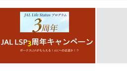

すけすけのマイル乞食
フィード

【2026/11版】dポイント増量キャンペーンは最大15%増量。
すけすけのマイル乞食
2026/11も開催！！！恒例のdポイント増量キャンペーンがいよいよ開始！ポイント交換で8%増量、抽選で10人に1人は+7%の15%増量になる！各種ポイントをdポイントに移行するだけの錬金術。ポイントサイトから増量対象。...【2026/11版】dポイント増量キャンペーンは最大15%増量。 first appeared on すけすけのマイル乞食.
2日前

JALのLSP3周年記念キャンペーン開催。毎年11月に発表が恒例！？
すけすけのマイル乞食
JAL Life Statusプログラムの3周年記念Life Statusポイント（LSP）キャンペーン開始。JALカード、JAL Pay、JAL、国内線搭乗でボーナスLSP。対象期間は2027/1/1～。要エントリー。...JALのLSP3周年記念キャンペーン開催。毎年11月に発表が恒例！？ first appeared on すけすけのマイル乞食.
3日前

【大人気】PontaポイントからJALマイルへの交換レート25%UPキャンペーンが開始で激熱！ 1
1
すけすけのマイル乞食
2026/11も来た！毎年人気のPontaポイントからJALマイルへの交換でJALマイル20％ではなく、25％増量キャンペーン！！！交換レートが50%から62.5%に。各種ポイントサイトからも利用可能で激熱！！ 待ってい...【大人気】PontaポイントからJALマイルへの交換レート25%UPキャンペーンが開始で激熱！ first appeared on すけすけのマイル乞食.
5日前

シンガポール航空がB777X・A350ULRに新型ファーストクラス・ビジネスクラスを2027年後半から導入開始。
すけすけのマイル乞食
シンガポール航空がB777X・A350ULRに新型ファーストクラス・ビジネスクラスを2027年後半から導入開始。ファーストクラスはダブルベッド、ビジネスクラスもドア付きタイプへ。 まもなく、ANAがB787に導入する新型...シンガポール航空がB777X・A350ULRに新型ファーストクラス・ビジネスクラスを2027年後半から導入開始。 first appeared on すけすけのマイル乞食.
11日前
フィンエアーの特典航空券情報を総まとめ！欧州行きの特典航空券として優秀！
すけすけのマイル乞食
フィンエアー（ワンワールド所属）の特典航空券情報を総まとめ！特典枠も多い、便数も多い、JALマイルでも取れる。欧州行きの特典航空券としてけっこう優秀！ JALマイラーの方はヨーロッパにマイルを利用した特典航空券で行くなら...フィンエアーの特典航空券情報を総まとめ！欧州行きの特典航空券として優秀！ first appeared on すけすけのマイル乞食.
13日前
【2026/11版】アメックスゴールドプリファードの14万ポイントがもらえる紹介キャンペーン。
すけすけのマイル乞食
【2026/11版】アメックスゴールドプリファードの紹介キャンペーンとは。アメックスの新規入会キャンペーンで12万ポイントもらえるが、さらに2万ポイントがもらえる技で14万ポイントになる？？？ アメックスから登場した新ク...【2026/11版】アメックスゴールドプリファードの14万ポイントがもらえる紹介キャンペーン。 first appeared on すけすけのマイル乞食.
14日前
【2026/11版】ポイントインカム新規入会紹介キャンペーンが激熱で1,400円分のポイントがもらえる！
すけすけのマイル乞食
ポイントインカム新規入会キャンペーン！ステージ7からの紹介が一番お得な入会！常時300円+100円がもらえる。さらに2026/11は1,000円分のAmazonギフト券がもらえる大チャンス！！ ポイ活で人気ナンバーワンの...【2026/11版】ポイントインカム新規入会紹介キャンペーンが激熱で1,400円分のポイントがもらえる！ first appeared on すけすけのマイル乞食.
21日前
年会費1万円台のカードの入会ボーナスがなんと10万ポイントで激熱！！
すけすけのマイル乞食
【年会費は安いのに大量ポイント獲得可能】アメリカン・エキスプレス・ビジネス・カードの新規入会キャンペーンを徹底紹介。なんと最大7.5万ポイント+2.5万ポイントと超豪華。ポイントはANAマイルにもJALマイルにも交換可能...年会費1万円台のカードの入会ボーナスがなんと10万ポイントで激熱！！ first appeared on すけすけのマイル乞食.
21日前
三井住友カード Visa Infiniteの入会キャンペーン＆ポイントサイト情報まとめ。
すけすけのマイル乞食
年会費99,000円（税込）というVisa最上位ランクのクレジットカード「三井住友カード Visa Infinite」の入会キャンペーン＆ポイントサイト情報まとめ。2026/11/30までなら豪華景品が当たる「KEY T...三井住友カード Visa Infiniteの入会キャンペーン＆ポイントサイト情報まとめ。 first appeared on すけすけのマイル乞食.
24日前
ヘルシンキ空港フィンエアービジネスクラスラウンジをレビュー。フィンエアーやJALで利用可能。
すけすけのマイル乞食
ヘルシンキ空港のフィンエアービジネスクラスラウンジをレビュー。フィンエアーやJALのビジネスクラスでヘルシンキ経由での旅行の際にはこの豪華ラウンジが利用できる。 ちょっと海外に行く機会が少なかったので、搭乗レビューやラウ...ヘルシンキ空港フィンエアービジネスクラスラウンジをレビュー。フィンエアーやJALで利用可能。 first appeared on すけすけのマイル乞食.
1ヶ月前